What is Kinematics?
Kinematics is the science of motion that studies properties of motion without considering the forces that act to cause such motion. The scope of kinematics includes position, velocity, acceleration and other higher\ order derivatives of position with respect to time and other variables.
What are the popular methods of modelling and analyzing kinematics?
Two of the most popular methods of kinematic modelling and analysis are the forward and inverse kinematic models.
What is Forward kinematics?
In the context of this VL experiment forward kinematics addresses the following question: If the various motors on the robot turn so much, where would the robot be or where would a point on the robot be? More formally given the velocities commanded to the motors on the robot the forward kinematic problem computes the position evolution of a reference point on the robot over time as a result of such commanded velocities
What is inverse kinematics?
Inverse kinematics computes the velocities to be commanded to the motor so that the robot can reach a given location. More formally given an ending configuration of the robot pose the inverse kinematics problem seeks to find a set of wheel/motor velocities and positions that would enable the robot to reach that ending configuration.

What is a Differential drive robot?
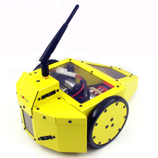
Differential drive is the common drive mechanism used in mobile robots. It consists of 2 drive wheels mounted on a common axis, and each wheel can independently being driven either forward or back-ward.
Since each wheel is independent we can vary the velocity of each wheel, for the robot to perform rolling motion, the robot must rotate about a point that lies along their common left and right wheel axis.
This point about which the robot rotates about is known as the ICC - Instantaneous Center Of Curvature
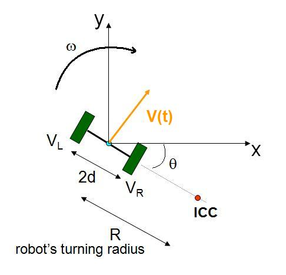
By varying the velocities of the two wheels, we can vary the trajectories that the robot takes. Because the rate of rotation ω about the ICC must be the same for both wheels, we can write the following equations:
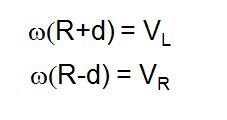
where 2d is the distance between the centers of the two wheels, VR, VL are the right and left wheel velocities along the ground, and R is the signed distance from the ICC to the midpoint between the wheels. At any instance in time we can solve for R and ω:
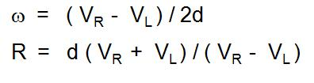
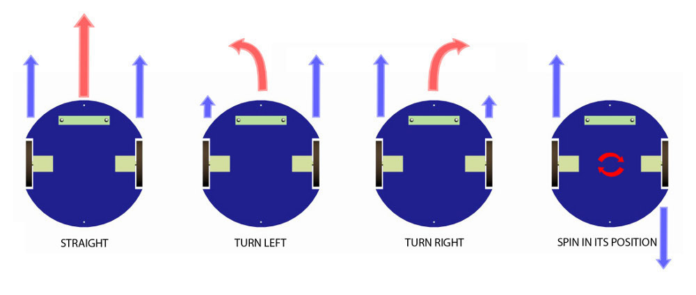
There are interesting cases with these kinds of drives.
- If VL=VR, then we have forward linear motion in a straight line. R becomes infinite, and there is effectively no rotation - ω is zero.
- If VL<VR, then R is finite and we have rotation about the point which is to the left of the left wheel along the axis.
- If VL>VR, then R is finite and we have rotation about the point which is to the right of the right wheel along the axis.
- If VL=-VR, then we have rotation about the midpoints ofthe wheels.
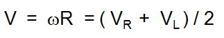
Derive forward kinematics for differential drive?
Assume that initial position of the robot is 0,0. When the wheels are given velocities say VL and VR respectively. The position of the robot after time t would be derived in the following way:
The equation of the resultant velocity of the point which is mid point of the axis connecting the wheels is calculated in the previous section.The x and y component of the resultant velocity is given by
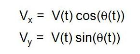
Using these velocities, the equation to calculate the x,y position of the robot after time t is given by
The resultant path would be of a circle and the equation to get the position of the robot after integration is
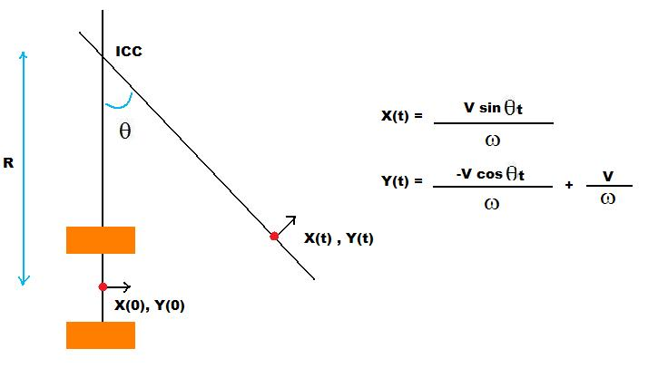
What is Ackerman Steeting?
Ackerman steering is the type of steering found on most automobiles. In this model, the front steering wheels each rotate on seprate arms so as to able to rotate different amounts to point at ICC, which must lie on the line passing through a larger angle axis of the vehicle. In this VL we discuss about the tricycle steering model
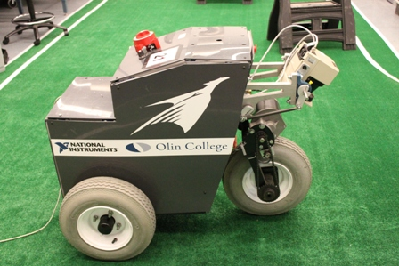
Tricycle drive is the common case in the mobile robots. It consists of one steering front wheel and two rear wheels (free wheels). The robot motion is controlled by the steering wheel's velocity VF and the direction α.
These controls produce a ICC along the axis of the rear wheels as shown below.
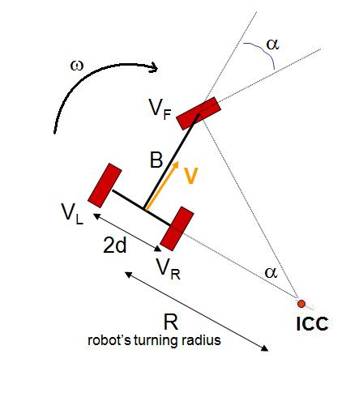
The effect of these controls on the other parameters of the robot like VL, VR, ω are shown below.
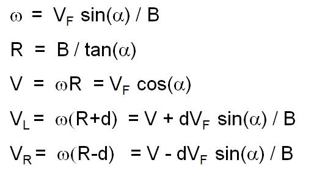
Derive forward kinematics of a tricycle?
Assume that the initial position of the robot is (0,0). When the steering wheel is given a velocity of VF along the direction α, then the position of the robot after time t is derived in the following way.
The equation of the resultant velocity of the point which is mid point of the axis connecting the wheels is calculated in the previous section. The x and y component of the resultant velocity is given by
Using these velocities, the equation to calculate the x,y position of the robot after time t is given by

The resultant path would be of a circle and the equation to get the position of the robot after integration is
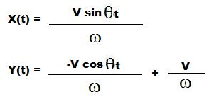

The objective of this virtual lab is to find kinematic models for a class of mobile robots, namely the differential drive robot, the tri-cycle drive/Ackerman steer robot and the omniwheeled robot.

- Type of the robot can be chosen on which you want to do the experiment.
- Click on the tab1 to set your robots initial position, scroll the mouse to set its initial orientation.
- Once the robot is chosen set its dimensions in the text fields provided.
- Once the robots dimensions are selected, set the control inputs accordingly using the text fields and the drop boxes provided.
- Note that the Velocities are pixels per second, so values below 10 would give a decent output.
- Once the inputs are provided click on the "Calculate" to view the path generated.


- Is RRT a forward or an inverse
kinematic planner? Explain.
- For a tri cycle robot let the front wheel velocity be Vf. Let the steering angle of the front wheel be while the angle made by the main body axis (the line joining the front wheel to the midpoint of the line connecting the rear wheels) be . Let the distance between the endpoints of the rear wheels be 2d and let b be the distance between the front wheel and the midpoint of the segment connecting the rear wheels. Derive the forward kinematic equations of the robot as (X,Y) = f(VF,alpha).
- For the above problem clearly indicate by integrating out the integrals that the path traced by the mid point joining the rear wheels is a circle and what is the radius of that circle?
- Derive the kinematic equations of the omni directional robot below, with four wheels, placed at ninety degrees between them. The velocity of the left and right wheels is denoted by VL and VR, the top and bottom wheels is vt and vb. Given these velocities, what is the velocity of the platform center, Vc and its angular velocity? In other words derive a relation for Vc and angular velocity in terms of the wheel velocities. Assume wheel base and length of the robot.
- Explain with suitable examples why a geometric plan does not translate into a kinematically consistent plan.

- Introduction to Autonomous Mobile Robots by Rolan Siegwart and Illah R. Nourbakhsh.
- Computational Principles of Mobile Robotics by Gregory Dudek and Michael Jenkin.